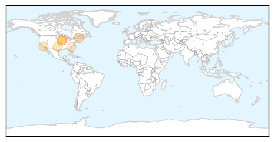
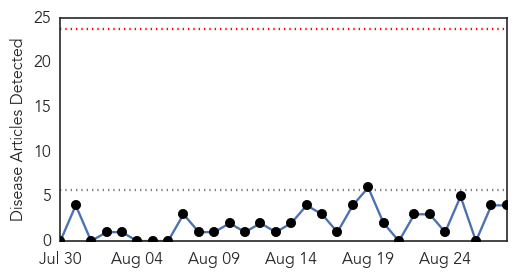
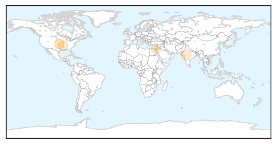
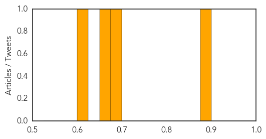

West Nile Virus
30-Day Web Trend
0 alerts, 0 warnings

30-Day Twitter Trend
0 alerts, 0 warnings

Article Locations
Article Confidences

Top Articles:
- 0.997
- More cases of West Nile being reported in Iowa
- 0.974
- 7 counties named where new West Nile virus cases confirmed
- 0.877
- O.C. reports 2nd West Nile death this year, 8th so far in the state
- 0.846
- CDC Advises to take more Safety Measures to Avoid Mosquito Bites
- 0.782
- Pool of mosquitos first to test positive for West Nile virus this year
- 0.685
- Mount Pleasant woman says she has West Nile - WCIV-TV
Top Tweets:
-
No tweets found for Aug 28, 2014
Measles
30-Day Web Trend
0 alerts, 0 warnings

30-Day Twitter Trend
0 alerts, 0 warnings

Article Locations
Article Confidences
Top Articles:
Top Tweets:
-
No tweets found for Aug 28, 2014